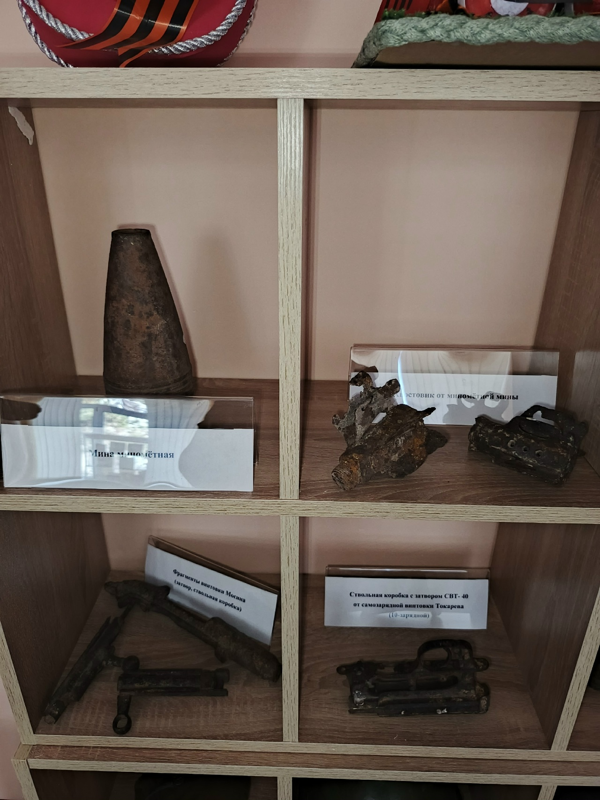
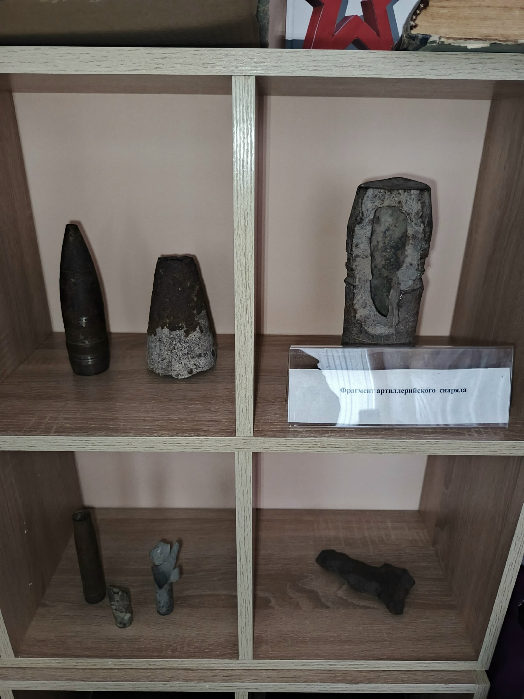
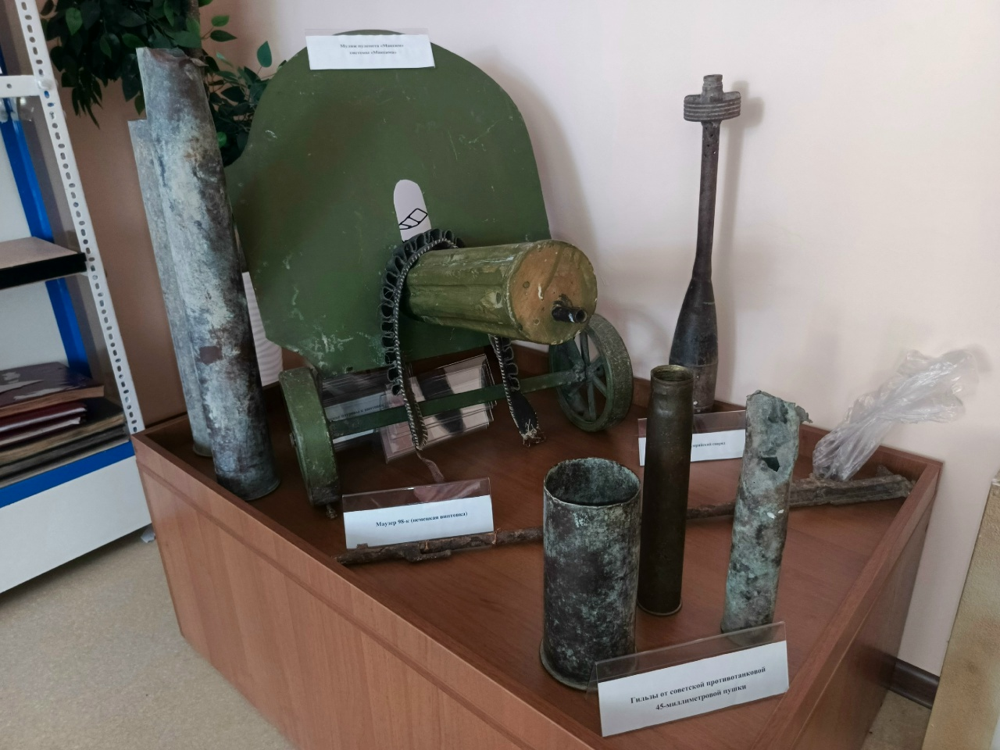

Эта страничка посвещена экспонатам школьного музея
Здесь представлены образцы вооружения и военной техники времен Великой Отечественной войны.
Представленные экспонаты:

Вооружение времен Великой Отечественной войны
На данном снимке представлена коллекция образцов оружия: мина минометная, хвостовик от минометной мины, фрагменты винтовки Мосина (затвор, ствольная коробка), ствольная коробка с затвором СВТ-40 от самозарядной винтовки Токарева (10-зарядной).

Историческое оружие и боеприпасы
Фото демонстрирует коллекцию боеприпасов: артиллерийские снаряды и патроны от стрелкового оружия периода Второй мировой войны.

Подлинный муляж пулемета Максима
Этот экспонат представляет собой точную копию знаменитого станкового пулемета системы Максима, использовавшегося русской армией и Красной Армией в XX веке. Представляет историческую ценность и является важной частью экспозиции нашего музея.